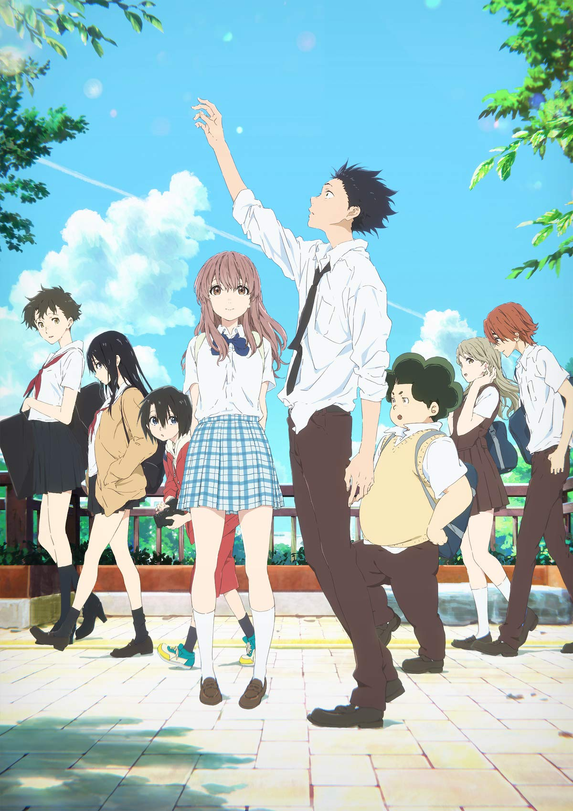
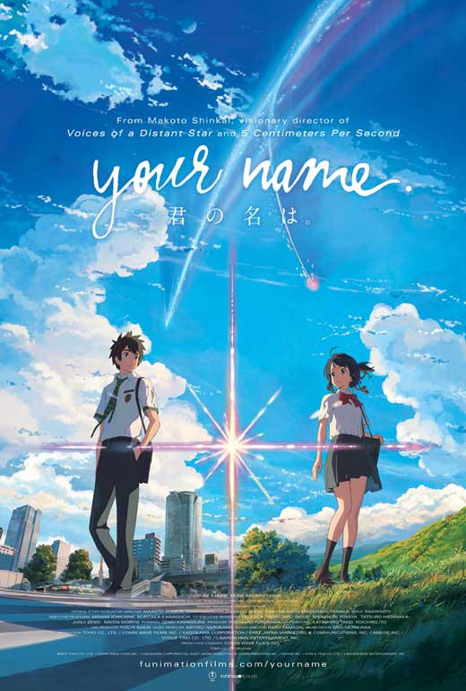
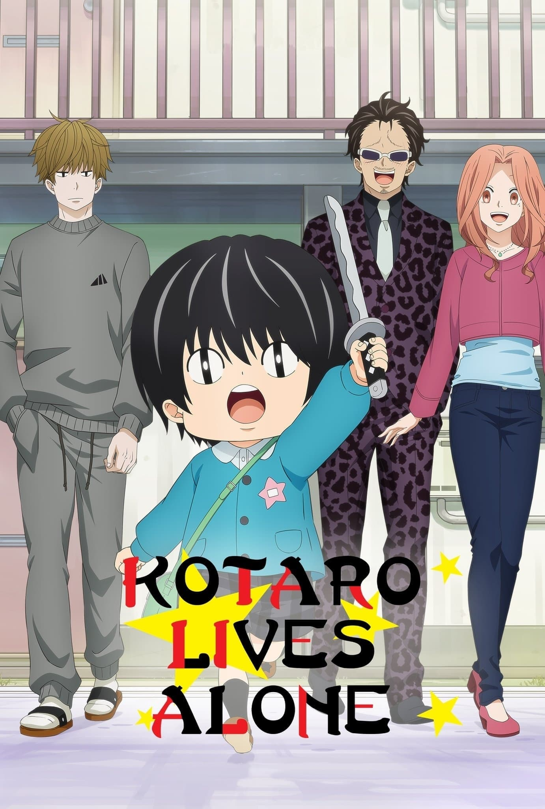

Slice of Life Anime
Comfort shows, real emotions, and characters you end up caring about for no reason. Slice of life is for when you want something meaningful without nonstop chaos.
Jump to the lineupSlice of Life Anime Lineup
| Anime | Genres | Where to Watch | About the Story | Trailer |
|---|---|---|---|---|
|
 A Silent Voice |
Slice of Life, Drama |
Netflix Crunchyroll |
Shoya Ishida spends his childhood bullying a deaf classmate, Shoko Nishimiya, until the
guilt follows him for years. Now older and struggling with loneliness, Shoya tries to
make things right and reconnect with Shoko — even though the damage from the past is still there.
The story focuses on apology, healing, and what it really means to change when you can’t undo what happened. It’s emotional, realistic, and handles friendship and self-worth in a way that feels painfully honest. Main characters: Shoya Ishida, Shoko Nishimiya If you like: The Perks of Being a Wallflower or 13 Reasons Why, you’ll like the heavy emotions, growth, and second-chance themes. |
|
|
 Your Name |
Slice of Life, Romance, Fantasy |
Netflix Crunchyroll |
Two teenagers, Mitsuha and Taki, start waking up in each other’s bodies without warning.
At first it’s funny and chaotic, but they slowly learn how to live each other’s lives —
and they begin forming a connection they can’t explain.
When the body-switching suddenly stops, Taki realizes something bigger is going on, and he becomes determined to find Mitsuha even if it means chasing a memory that feels impossible. It’s part romance, part mystery, and somehow still feels super grounded. Main characters: Mitsuha Miyamizu, Taki Tachibana If you like: The Notebook or The Time Traveler’s Wife, you’ll like the fate-driven romance and emotional “I have to find you” storyline. |
|
|
 Kotaro Lives Alone |
Slice of Life, Comedy, Drama | Netflix |
Kotaro is a tiny kid who moves into an apartment complex… alone. His neighbor, a struggling manga
artist, ends up slowly becoming part of Kotaro’s life along with the other residents in the building.
On the surface it’s funny and cute, but the show hits hard because Kotaro’s “independence” comes from things no kid should have to go through. It’s about found family, adults trying to do better, and how small kindnesses actually matter. Main characters: Kotaro Sato, Shin Karino If you like: Modern Family or This Is Us, you’ll like the mix of humor and emotional moments about family and healing. |
|
 Aggretsuko
Aggretsuko
|
Slice of Life, Comedy | Netflix |
Retsuko is a quiet office worker who deals with annoying coworkers, a terrible boss, and the
exhausting “adulting” routine. Her secret coping method? Screaming death metal at karaoke after work.
The show is hilarious, but it’s also super relatable if you’ve ever felt stuck in a job, pressured by expectations, or like you’re trying to keep it together while everything is annoying. It’s basically workplace stress turned into comedy. Main characters: Retsuko, Haida, Ton If you like: The Office or Parks and Recreation, you’ll like the workplace chaos and character comedy. |